- Arrivi da MacDiveQuale file esportare e come passare senza perdere nulla.
- Scarica da un computerShearwater e altri computer Bluetooth, o un cavo sul Mac.
- Garmin DescentImporta i file .fit dall'orologio o da Garmin Connect.
Qualcosa non funziona? Vedi Risoluzione dei problemi. Thermocline è un logbook: mostra cosa ha registrato il tuo computer subacqueo e non calcola mai la decompressione.
Ottieni l'app
Thermocline è solo per dispositivi Apple: iPhone, iPad, Mac e Apple Watch. Durante la beta si installa tramite l'app TestFlight di Apple.
| Operazione | iPhone e iPad | Mac |
|---|---|---|
| Partecipa alla beta | Partecipa alla beta: un solo link per iPhone, iPad, Mac e Apple Watch. Aprilo su ogni dispositivo e installa da TestFlight. L'app per Apple Watch arriva con l'app per iPhone. Tutti i dispositivi condividono lo stesso logbook tramite iCloud. | |
| Iscritto alla beta per iPhone prima del 18 novembre 2026 | Quell'app è stata spostata. Vedi passare dalla vecchia app per iPhone. | |
| Resta aggiornato | Quando TestFlight propone una nuova build, aggiorna ogni dispositivo che usi. Una build più vecchia smette di inviare le modifiche finché non viene aggiornata, e lo segnala. Non si perde nulla. | |
Primo avvio e presentazione
Al primo avvio l'app chiede il tuo nome, le unità di misura e da dove arrivano le tue immersioni. Le unità sono memorizzate nel sistema metrico; cambiarle modifica solo la visualizzazione.
| Operazione | iPhone e iPad | Mac |
|---|---|---|
| Impostazioni | La scheda Profilo | Thermocline → Impostazioni |
| La presentazione | Profilo → Aiuto → Mostra la presentazione | Aiuto → Guarda la presentazione |
La presentazione mostra ogni schermata su un logbook di esempio, non sul tuo.
Gli screenshot in questa pagina mostrano il logbook di esempio della presentazione: immersioni e siti sono inventati. Toccane uno per vederlo a grandezza piena.

Porta il tuo logbook
Thermocline legge MacDive (la sua cartella, XML o UDDF), un database Shearwater Cloud, i file .fit Garmin, l'UDDF di qualsiasi logbook e il CSV. Scegli tu quali immersioni aggiungere, e tutto ciò che non può leggere viene elencato, mai scartato in silenzio.
| Operazione | iPhone e iPad | Mac |
|---|---|---|
| Importa un file | Profilo → I tuoi dati → Importa un file di logbook, poi sceglilo da iCloud Drive o File. | Il comando di importazione del menu File (⇧⌘I). |
| File .fit Garmin | Selezionane più di uno alla volta. | Selezionane più di uno, o un'intera cartella. |
| La cartella di MacDive, con le foto | Solo Mac. Porta le foto in un secondo momento con l'app per Mac. | File → Importa da MacDive… e scegli la cartella di MacDive: immersioni, foto delle immersioni e foto dei brevetti. I file di MacDive non vengono modificati. |
| Scegli le immersioni | Togli la spunta a quelle che non vuoi, poi Importa. | |
| Annulla un'importazione | Il punto di ripristino Prima di un'importazione, salvato prima di ogni importazione di più di un'immersione. | Annulla importazione… nel rapporto di importazione, o lo stesso punto di ripristino. |
Al termine dell'importazione, un rapporto mostra quante immersioni sono state aggiunte, quali elementi non sono stati importati e perché, e cosa c'è da verificare. Le immersioni il cui file non aveva un gas aspettano in Da confermare.
Quale file di MacDive usare
MacDive può darti il suo XML, il suo UDDF o (sul Mac) la sua intera cartella. Non contengono le stesse cose:
| Cosa contiene | MacDive XML | MacDive UDDF | Cartella di MacDive (Mac) |
|---|---|---|---|
| Immersioni, siti, compagni, gas | Sì | Sì | Sì |
| Capacità delle bombole | Sì | No: le sue capacità non sono capacità idriche, quindi restano vuote | Sì |
| Profili di profondità | Ogni immersione | Ogni immersione | Tutte tranne le immersioni che MacDive ha scaricato su iPhone o iPad, che conserva cifrate |
| NDL e ppO₂ del computer lungo l'immersione | Sì | No | Sì, tranne quelle immersioni cifrate |
| Il CNS del computer | Sì | No | Sì |
| Attrezzatura, tag e tipi di immersione | Sì | No | Sì |
| Foto delle immersioni e dei brevetti | No | No | Sì |
| Operazione | iPhone e iPad | Mac |
|---|---|---|
| La via migliore | Esporta le tue immersioni da MacDive in XML, salva il file su iCloud Drive e importalo. | Importa la cartella di MacDive, poi l'XML sopra. L'XML completa profili, NDL e ppO₂ delle immersioni cifrate. |
| UDDF già importato | Importa anche l'XML. Le immersioni già nel tuo logbook vengono riconosciute, non aggiunte di nuovo, e viene completato solo ciò che manca, comprese le capacità delle bombole. Niente di ciò che hai inserito o corretto viene modificato. | |
Orologi Garmin Descent
Un Garmin Descent conserva un file .fit per ogni immersione. Ci sono due modi per ottenerli:
- Dall'orologio: collegalo al Mac con il suo cavo e apri la cartella GARMIN → Activity. Sul Mac puoi importare l'intera cartella GARMIN; i file che non sono immersioni, come corse e impostazioni, vengono saltati.
- Da Garmin Connect: apri l'immersione e scegli Esporta originale. Ottieni un .zip: decomprimilo prima, poi importa il file .fit al suo interno.
Le posizioni arrivano dal GPS dell'orologio. In un'immersione in corrente l'orologio salva come partenza il punto in cui sei riemerso; l'importazione trova il punto in cui sei entrato davvero in acqua, così l'immersione viene abbinata a quel sito. Aggiungi nelle note gli altri relitti che hai incontrato.

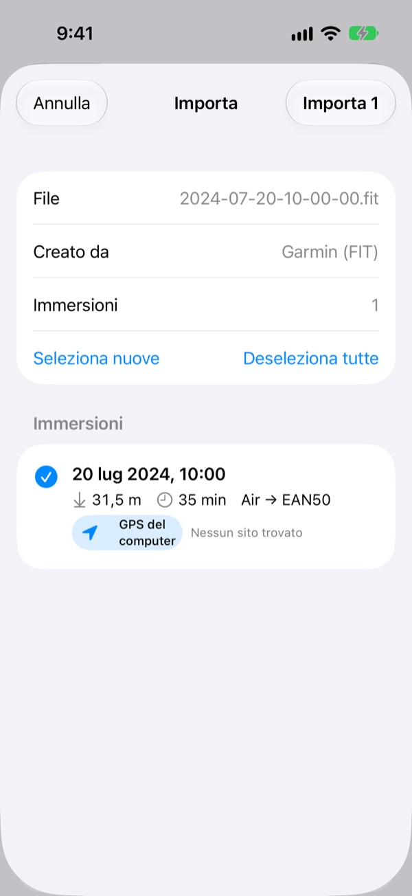
Scarica le immersioni dal tuo computer
Prima metti il computer subacqueo in modalità Bluetooth. Su uno Shearwater: Menu → Bluetooth. Ci resta circa due minuti. Vengono scaricate solo le immersioni successive all'ultimo scaricamento.
| Operazione | iPhone e iPad | Mac |
|---|---|---|
| Apri | Logbook → Scarica immersioni | File → Scarica dal computer subacqueo… (⇧⌘D) |
| Collega | Bluetooth. Scegli il tuo computer sotto Nelle vicinanze; la prima volta, inserisci il PIN mostrato sul suo schermo. | Scegli Bluetooth o Cavo USB. Per un cavo, scegli il modello del tuo computer e la sua porta, e segui Prima di iniziare. |
| Termina | Togli la spunta alle immersioni che non vuoi, poi Tieni. Le immersioni senza spunta restano sul computer e vengono riproposte la volta successiva. | Scarica. |
La domanda sull'orologio. Il primo scaricamento da ogni computer chiede Su quale fuso è impostato l'orologio del computer? La maggior parte dei computer registra l'ora locale senza fuso orario, quindi questa risposta mantiene corretti gli orari delle immersioni quando viaggi. La risposta viene ricordata per quel computer.
Dopo aver scelto le immersioni, puoi scorrerle una alla volta per impostare sito e gas, oppure Finisci dopo: aspettano in Da confermare.
Hai eliminato un'immersione e la rivuoi? Attiva Scarica tutte le immersioni del computer. Ci vuole più tempo; le immersioni già nel tuo logbook vengono saltate.

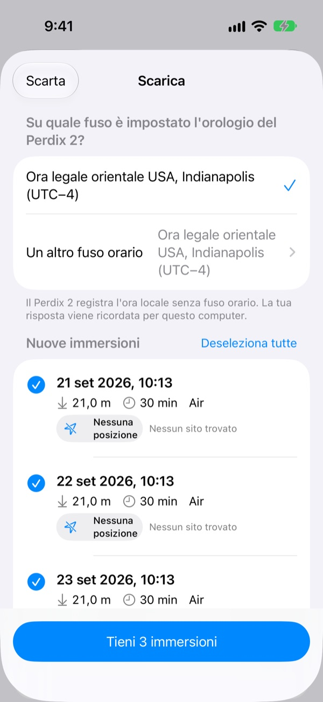
Shearwater Predator e Petrel 1
Usano un Bluetooth più vecchio (Bluetooth Classic) che iPhone e iPad non possono usare. Sul Mac, abbina prima il computer in Impostazioni di Sistema → Bluetooth, poi scegli Cavo USB nella finestra di scaricamento: la sua porta potrebbe comparire nell'elenco. Metti il computer in modalità upload Bluetooth e scegli Scarica. Non è ancora stato provato su un Predator o Petrel 1 reale, quindi invia il registro dello scaricamento, che funzioni o no. Su iPhone, importa invece le loro immersioni da Shearwater Cloud o da un file UDDF.
Computer supportati
Thermocline scarica con libdivecomputer, la libreria open source condivisa da molti logbook. Conosce diverse centinaia di modelli della maggior parte dei produttori. Per vedere il tuo, apri la schermata di scaricamento e scegli Computer supportati; ognuno indica se funziona su iPhone e iPad o se richiede il Mac.
| Connessione | Dove funziona | Provato finora |
|---|---|---|
| Bluetooth LE | iPhone, iPad e Mac | Shearwater Perdix e Perdix 2. Gli altri modelli dovrebbero funzionare: faccelo sapere. |
| Cavo USB o seriale | Solo Mac | Sviluppato, non ancora provato su hardware reale. |
| Bluetooth Classic (Predator, Petrel 1 e altri modelli più vecchi) | Solo Mac, abbinato come porta seriale (come) | Non ancora provato. |
| Garmin Descent (file .fit) | Importazione su iPhone, iPad e Mac (come) | Immersioni Descent, comprese quelle in corrente. |
Hai un computer che non abbiamo provato? Aiutaci a provarlo.
Conferma sito e gas
Le immersioni a cui mancano ancora un sito o gas confermati aspettano in Da confermare. Niente impedisce di salvarle; completale quando vuoi.
| Operazione | iPhone e iPad | Mac |
|---|---|---|
| Trovale | In cima a Logbook, sotto Da confermare. | Vai → Da confermare (⌘2) |
| Conferma | Aprine una, poi Scegli un sito e tocca Sì, questi gas sono giusti (o Correggi gas…). | Il banner di ogni immersione propone Conferma sito e gas…, Scegli sito… o Conferma i gas…. |
Thermocline suggerisce il sito in base alla posizione dell'immersione: prima i tuoi siti, poi gli elenchi integrati di oltre 76.000 siti di immersione e relitti, che funzionano offline.

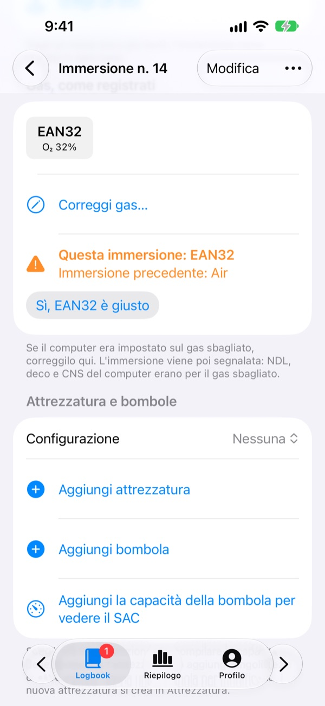
Leggi un'immersione
| Operazione | iPhone e iPad | Mac |
|---|---|---|
| Leggi qualsiasi istante | Trascina lungo il grafico. | Punta il grafico. |
| Registra un'immersione a mano | Logbook → Registra a mano | ⌘N |
- I valori di sicurezza stanno in una striscia fissa in cima a ogni immersione, sempre nello stesso punto.
- Il profilo: le etichette sotto il grafico mostrano o nascondono Bombola, ppO₂, NDL, SAC, Temp., CNS e Risalita, come strisce Impilato o un'unica vista Sovrapposto. Solo ciò che l'immersione ha registrato ha un'etichetta. La NDL è quella del computer e si ferma durante la deco, dove la fascia rossa mostra le soste. Su un iPhone stretto le etichette restano su una riga e scorrono di lato. Provalo nella home page.
- Rebreather: da qualsiasi computer o file che li registra, la striscia ppO₂ mostra il setpoint con la ppO₂ votata (e ogni cella, dove registrata), e la lettura indica il setpoint in quel momento. Un passaggio dal diluente a qualsiasi altro gas è indicato come bailout.
- Consumo di gas: tocca o fai clic su Come? accanto al valore di SAC per vedere ogni dato: la bombola, la sua capacità idrica, le pressioni, la temperatura e la correzione per gas reale.
- Modifiche: modifica qualsiasi immersione. Una correzione conserva la lettura originale del computer.
- Zavorra: il primo tocco su + imposta Senza zavorra, per un'immersione senza zavorra. Da lì tocca − per cancellarlo.
- Link nelle note: i link web nelle note di un'immersione si possono toccare o cliccare. Quando hai finito di scrivere, tocca Fine sopra la tastiera: i link compaiono, e un link YouTube o Vimeo riceve un pulsante Aggiungi … ai link video sotto le note. Per scrivere di nuovo nelle note, scegli Modifica note.


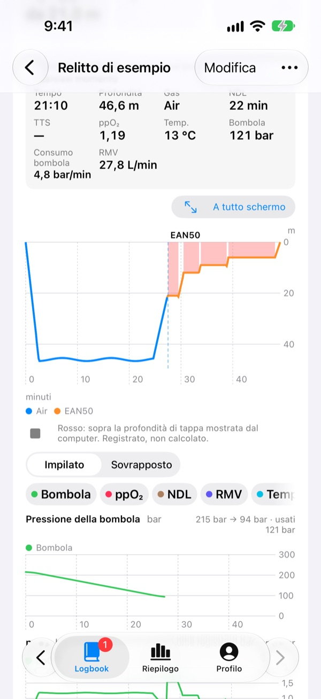


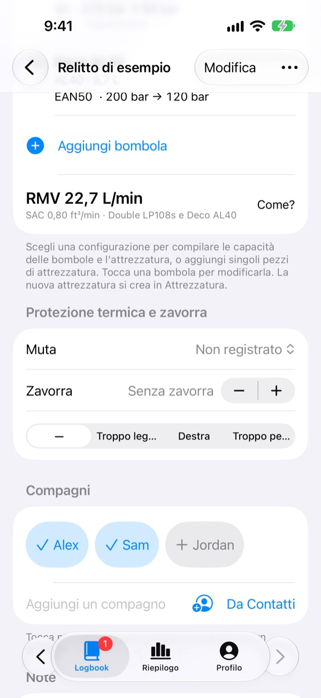

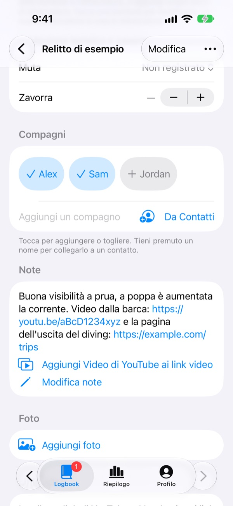

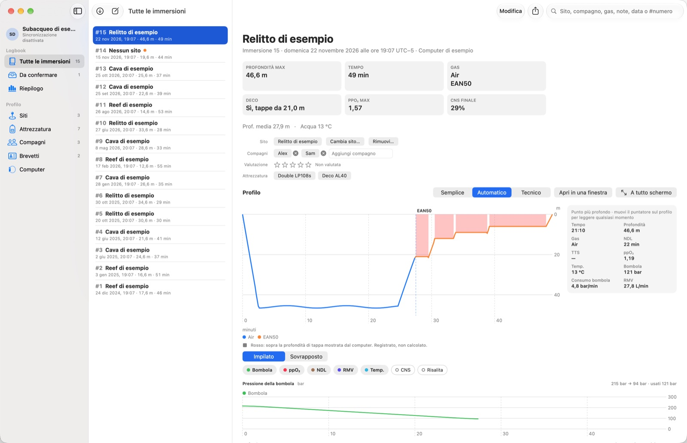
Siti, posizioni e Apple Watch
| Operazione | iPhone e iPad | Mac |
|---|---|---|
| Aggiungi un sito | Profilo → Siti, poi il pulsante per aggiungere: Trova o dai un nome a un sito o Segna il punto qui (GPS). | Vai → Siti (⌘4), poi Aggiungi sito… |
| Vedi tutti i siti elencati | Profilo → Siti → Mappa, poi il pulsante del globo, oppure avvicina le dita per ridurre lo zoom al massimo. I relitti sono arancioni, reef e siti di immersione blu, i tuoi siti bandierine rosse. | Siti, poi Mostra globo nella barra degli strumenti, oppure riduci lo zoom fino in fondo. |
| Trova una posizione | Un sito senza posizione propone Trova posizione: controlla il suggerimento sulla mappa, inserisci le coordinate o rilascia un segnaposto. | Trova posizioni… passa in rassegna ogni sito senza posizione, uno alla volta. |
Apple Watch: segna un punto in superficie e il punto aspetta sul tuo iPhone in Da confermare. Vedi Apple Watch.
Le posizioni dei siti servono per il logbook, non per la navigazione.

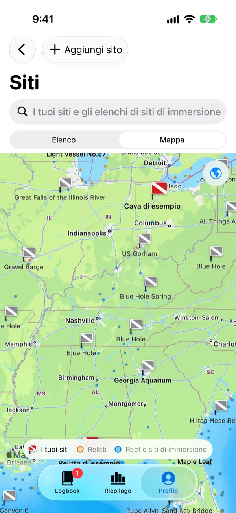
Apple Watch
L'app per Watch fa una sola cosa: segna dove ti trovi in superficie, così è facile registrare il sito di un'immersione. Non registra immersioni; quelle arrivano dal tuo computer subacqueo. Richiede watchOS 11 o versioni successive e un iPhone con Thermocline.
| Operazione | Apple Watch | iPhone |
|---|---|---|
| Installa | Arriva con l'app per iPhone. Se non è sull'orologio, apri l'app Watch sul tuo iPhone, trova Thermocline sotto App disponibili e tocca Installa. La prima volta, consenti l'accesso alla posizione per Thermocline sull'orologio. | |
| Segna un punto | In superficie, sopra il sito, apri Thermocline. Aspetta Fix buono, poi tocca Segna punto. L'orologio ti dà un colpetto al polso quando è salvato. | Il punto arriva da solo. Se l'iPhone è fuori portata, viene inviato quando sono di nuovo vicini. |
| Dagli un nome | Facoltativo. Tocca Aggiungi un nome dopo averlo segnato, o più tardi in Punti segnati, e dettalo, scrivilo a mano o digitalo, per esempio “prua del relitto”. Si salva quando hai finito. | Il nome viene proposto come nome del nuovo sito. Puoi usarlo o scegliere un altro sito. |
| Confermalo | Niente da fare sull'orologio. | Logbook → Da confermare. Quando è online, l'iPhone cerca il punto, suggerisce il sito noto più vicino e mostra l'immersione a cui appartiene più probabilmente. Confermalo o scartalo. |
| Verifica che sia stato inviato | Punti segnati mostra ciascuno con Inviato all'iPhone o In attesa di invio all'iPhone, e una mappa. Un punto lascia l'orologio quando viene confermato o scartato sull'iPhone. | Una volta confermato, il sito si sincronizza con gli altri tuoi dispositivi come qualsiasi altro. |

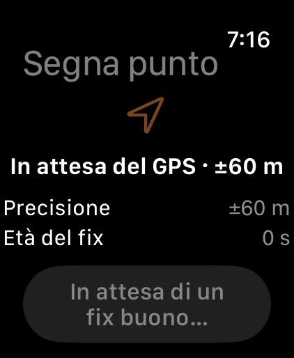


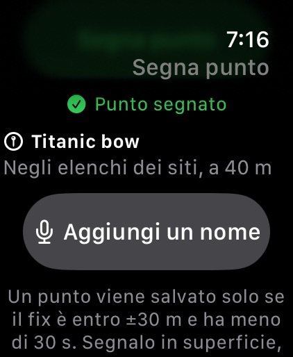

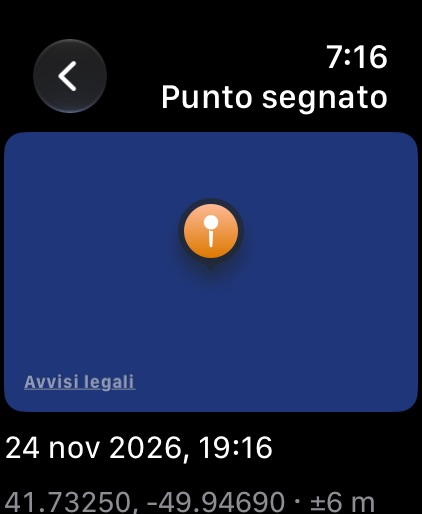
L'orologio salva un punto solo da un fix entro ±30 m e vecchio meno di 30 secondi, e ignora una vecchia posizione in cache. Segna il punto in superficie, non sott'acqua.
Le posizioni dei siti servono per il logbook, non per la navigazione.
Attrezzatura e bombole
| Operazione | iPhone e iPad | Mac |
|---|---|---|
| Apri Attrezzatura | Profilo → Attrezzatura | Vai → Attrezzatura |
- Su una bombola, Modello apre il catalogo delle bombole: cerca per produttore o modello (per esempio “PST LP104”) per inserire le sue misure pubblicate, oppure inserisci i tuoi valori.
- Spunta Bibombola (con manifold) per un bibombola.
- Una bombola in acciaio punzonata con un +: attiva Marcatura plus se l'ultimo collaudo idraulico ha mantenuto il +. Viene mostrata, per esempio, come 2400+. Questa opzione compare quando le capacità delle bombole sono mostrate in piedi cubi.
- Le bombole di ogni immersione si trovano nella sezione gas dell'immersione (Aggiungi bombola, Configurazione).
Fondi e unisci immersioni
- Fondi serve per un'immersione registrata da due computer. Entrambe le registrazioni vengono conservate e puoi passare dall'una all'altra sul grafico.
- Unisci serve per un'immersione divisa in due da una breve risalita in superficie.
- Thermocline non fa mai né l'una né l'altra cosa da solo. Quando individua una coppia probabile, un banner in cima al logbook propone di controllarle.
| Operazione | iPhone e iPad | Mac |
|---|---|---|
| Fallo tu | Tocca Seleziona, scegli due immersioni, poi Fondi o Unisci. | Seleziona due immersioni e fai clic con il tasto destro: Fondi queste immersioni… o Unisci queste immersioni… |
| Hai cambiato idea | Annulla subito, oppure Separa queste immersioni sull'immersione in qualsiasi momento. | |
Foto e link video
- Aggiungi foto su un'immersione le copia dalla tua libreria nel logbook.
- Per risparmiare spazio su iCloud, attiva Sincronizzazione → Risparmia spazio iCloud sulle foto delle immersioni su ogni dispositivo. Le foto vengono allora collegate a Foto di iCloud invece di essere copiate, e si possono aggiungere video dalla tua libreria. Thermocline chiede l'accesso a Foto solo quando attivi questa opzione.
- Link video: incolla un link YouTube o Vimeo sotto le foto di un'immersione. Viene conservato solo il link. Un link già presente nelle note si può aggiungere da lì (vedi Leggi un'immersione).
- Lo stesso video su più immersioni: seleziona le immersioni (su iPhone, prima tocca Seleziona), scegli Modifica … immersioni… e aggiungi il link sotto Link video. Viene aggiunto a ogni immersione selezionata, e i link che hanno già vengono conservati.
Riepilogo e consumo di gas
La scheda Riepilogo (Riepilogo nella barra laterale del Mac) fa i conti del tuo logbook: immersioni per anno e per mese, profondità, gas, record, dove ti immergi, e il sito e il compagno più frequenti. Scegli un periodo in alto, per esempio un anno, e tocca qualsiasi numero o barra per vedere le immersioni che ci stanno dietro.
- Consumo di gas mostra il tuo SAC e il tuo RMV su tutte le immersioni del periodo che hanno una capacità della bombola e pressioni iniziale e finale, ponderati per tempo e profondità. Toccalo per vedere quali immersioni sono state conteggiate.
- Alcune immersioni importate non hanno la capacità della bombola, quindi all'inizio Consumo di gas potrebbe essere vuoto (vedi Quale file di MacDive usare). Imposta le bombole delle tue immersioni, in Attrezzatura o su ogni immersione, e si riempie.

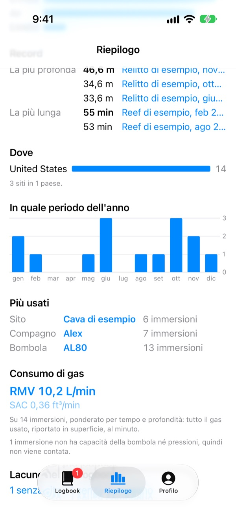
Sincronizza con iCloud
| Operazione | iPhone e iPad | Mac |
|---|---|---|
| Attiva la sincronizzazione | Profilo → Sincronizzazione | Thermocline → Impostazioni → Sincronizzazione |
Ogni dispositivo che ha eseguito l'accesso con lo stesso Apple Account condivide così un unico logbook, conservato nel tuo iCloud privato. Le modifiche fatte offline aspettano sul dispositivo e vengono inviate quando torna online.
La sezione Sincronizzazione mostra lo stato, ciò che è In attesa di invio e se questo dispositivo e gli altri corrispondono. Sincronizza ora controlla subito.

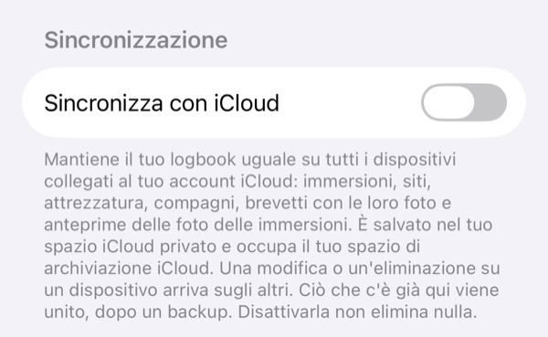
Esportazione, punti di ripristino e cancellazione
| Operazione | iPhone e iPad | Mac |
|---|---|---|
| Esporta | Profilo → I tuoi dati | Il menu File |
| Punti di ripristino | Profilo → I tuoi dati → Punti di ripristino | Impostazioni → I tuoi dati → Punti di ripristino |
- Esporta: l'UDDF è l'esportazione completa e la tua via d'uscita verso qualsiasi logbook. Disponibili anche: un foglio di calcolo (CSV), MacDive XML, segnalibri per il rilievo di grotte (CSV) e un riepilogo dell'esperienza (testo) per i prerequisiti dei corsi.
- Punti di ripristino: ne viene salvato uno prima di attivare la sincronizzazione, prima di un'importazione grande, di una fusione, di un'unione, di una cancellazione e prima di qualsiasi eliminazione. Il ripristino salva prima il tuo logbook attuale come punto di ripristino, così puoi annullarlo.
- Cancella: Cancella logbook… propone di esportare prima. Con la sincronizzazione attiva, gli altri tuoi dispositivi si adeguano.

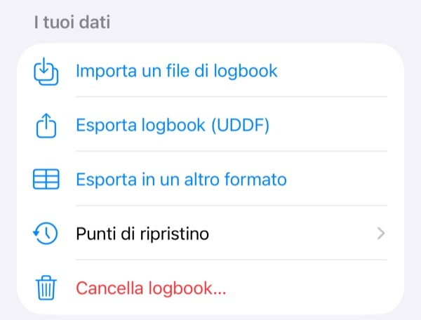
Ancora bloccato?
Vedi Risoluzione dei problemi, oppure invia un feedback da TestFlight o a brian@616labs.net.